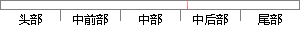

量的模糊子集为{NB，NM，NS，Z， PS，PM，PB}，
片段位置图

相似结果
相似片段：
转换到区间【－６，６】，可得比例因子： 巧＝１２／（６一口）：ｊ０＝１２／（ｄ―ｃ）。 取输入电压偏差△Ｕ，无功偏差△Ｑ和电抗器输出控制量】，的模糊子集为： ｛ＮＢ，ＮＭ，ＮＳ，Ｚ，ＰＳ，ＰＭ，ＰＢ）。其中的模糊语言变量的符号意义为：ＮＢ（Ｎｅｇａｔｉｖｅ 负大；ＮＭ（ＮｅｇａｔｉＶｅ Ｍｅｄｉｕｍ）负中：ＮＳ（ＮｅｇａｔｉＶｅ
| 对比库： | WriteCheck云资源库 |
| 来源： | www.nexoncn.com 查看来源 |
| 发布时间： | 2016-06-07 |
| 相似率 | 25% （轻度抄袭） |